Lesson 20 · Part 2 · Your workbench · 5 questions
Script first, one small agent step
Read first: One folder per task
Most of what happens around a ticket is the same every time: fetch, branch, install, test, format. Put all of that in a script, and give the agent only the step that needs judgment, kept small enough for a small, fast model. You get runs that are repeatable, cheap and easy to debug.
The idea
Picture hiring a top architect at a high hourly rate to redo your kitchen. You wouldn't pay them to carry boxes in from the van. They could, but it's slow, it's expensive, and every so often the boxes end up in a different room. The movers carry boxes the same way every time. The architect decides where the wall goes.
Most of us ask the agent to do both: "set up PAY-123, fetch orders and payments, make the worktrees, install, run the tests, then fix the bug". Every one of those steps but the last is carrying boxes. The way to split the work:
- Write down the routine, step by step, as you'd do it by hand.
- Ask of each step: would two careful engineers do it the same way? If yes, it's a script: same input, same output, every time. That property is called deterministic.
- What's left needs judgment. Make it one small step: a short, fixed input, an answer in a fixed JSON shape, and the smallest model that gets it right.
- The script checks the answer, then carries on.

Why the script wins for the fixed steps:
- Same every time. The model picks each command fresh on every run (How the next token is chosen). On Monday it branches from
origin/main; on Tuesday from your stale localmain. - Fast. Each command an agent runs is one pass of the loop: wait for the model, run the tool, send the whole conversation back. A script runs the same commands back to back, with no model call in between.
- Clean context. Install logs and test output don't pile up in the session that has to think about the bug (Why long sessions get worse).
- It fails at a line. With
set -e, a script stops at the first failing command. An agent may route around it and carry on.
Up close
Here is the judgment step for "which repos does this ticket touch?". It assumes a file ~/src/repos.txt with one line per repo, such as payments: refunds, PSP client. The ticket comes in on standard input:
#!/bin/bash
# triage PAY-123 < ticket.txt
# prints: orders payments
set -euo pipefail
list="$HOME/src/repos.txt"
log="$HOME/tasks/log"
mkdir -p "$log"
# allowed answers: the list's names
names=$(cut -d: -f1 "$list" |
jq -Rn '[inputs]')
schema=$(jq -nc --argjson n "$names" '
{type: "object",
required: ["repos", "why"],
properties: {
repos: {type: "array",
minItems: 1,
items: {enum: $n}},
why: {type: "string"}}}')
{ cat; echo; echo "Repos:"
cat "$list"; } |
claude -p --model haiku \
--tools "" --max-turns 3 \
--no-session-persistence \
--output-format json \
--json-schema "$schema" \
"Which repos must change for this
ticket? Use only the ticket and
the repo list." > "$log/$1.json"
# no valid answer: fail here
jq -er '.structured_output.repos
| join(" ")' "$log/$1.json"Five choices keep the step small and safe:
- Narrow input. The ticket and a one-line description of each repo. Not the codebase.
- A fixed answer.
--json-schemamakes Claude Code check the reply against the schema and ask the model again if it doesn't match. The result lands instructured_output. The docs say to check that the field is there before you use it;jq -efails the script if it isn't. - Only real names. The schema's
enumis built from the repo list itself, so the model can't answer with a repo you don't have. Thewhyfield is for you, when you glance at the answer. - No tools.
--tools ""switches off the built-in tools, so the model can only answer. It can't go exploring. - A small model. The
haikualias means Haiku 5.5 on Anthropic's API. Anthropic describes it as built "for high-volume, latency-sensitive tasks such as classification, extraction, and routing". This step is a classification.
Prices per million tokens, input / output, on Anthropic's API:
| Model | Input | Output |
|---|---|---|
| Opus 5.5 | $4 | $20 |
| Sonnet 5.5 | $2 | $10 |
| Haiku 5.5 | $0.10 | $0.50 |
Haiku 5.5 is 40 times cheaper than Opus 5.5, for prompts up to 100,000 tokens (above that it costs more). Run on a sample refund ticket for this lesson, the script above answered orders payments in about 4.5 seconds, for about $0.002.
Worked example
"Start a ticket", split:
| Step | Same every time? | Who |
|---|---|---|
| Get the ticket text | Yes | Script: tracker CLI |
| Which repos it touches | No | Small model, JSON |
| Check the answer | Yes | Script: schema |
| Fetch, worktrees, branch, brief | Yes | Script: newtask |
| Install, run tests once | Yes | Script |
| Find and fix the bug | No | Main agent session |
| Format, lint | Yes | Hook or script |
Two rows out of seven need a model. Money is rarely the main win; the five script rows are cheap even for a big model. The wins are that they now happen identically on every ticket, with no model calls in between, and that the one judgment step is small enough to test.
At your laptop
Save the script above as triage on your PATH, write ~/src/repos.txt, and wire it to newtask from One folder per task:
#!/bin/bash
# start PAY-123 < ticket.txt
set -euo pipefail
id="$1"
repos=$(triage "$id")
echo "$id touches: $repos"
read -rp "OK? [y/N] " ok </dev/tty
[ "$ok" = y ] || exit 1
# unquoted on purpose: one per repo
newtask "$id" $repos
echo "cd ~/tasks/$id && claude"The ticket text can come from your tracker's CLI, for example gh issue view 123 piped into start, or from a file you paste it into. Then test the judgment step on its own: take ten closed tickets, look up in git which repos really changed, and run triage on each. Ten answers you can check is a small eval (Evals: better or just different?). If it misses, improve the one-line repo descriptions before you reach for a bigger model.
Your turn
Question 1 · ~2 min
Every morning you tell the agent: "set up PAY-123: fetch orders and payments, make worktrees, install, run the tests". Monday it works. Tuesday it branched from your out-of-date local main. Wednesday it ran npm install in the wrong folder. Why does a simple routine keep changing, and what's the fix?
Show answer
The agent decides the commands afresh on every run, sampling each one, and nothing makes Tuesday's choice match Monday's. The steps never need judgment, so take them away from the model: ask the agent once to write the setup as a script, review it like any script, then run the script. Same commands every day, and when it breaks, it stops at a line number.
Question 2 · ~2 min
Your on-call routine: (a) read the service name from the alert's JSON, (b) fetch that service's logs for the last 30 minutes, (c) decide whether the errors come from your code or from a provider outage, (d) post a summary to the team channel. Which steps need a model?
Show answer
Only (c). (a) is one jq call, (b) is a query with fixed parameters, (d) is an API call. Even (c) can be a small step: hand the model the logs and ask for a fixed answer in JSON: a cause that must be "ours", "provider" or "unknown", plus the evidence. The script posts it.
Question 3 · ~2 min
An early version of triage asked for "a JSON list of repos" with no schema. One day it returned ["orders", "payment-service"]. The repo is called payments. newtask made the orders worktree, then failed. How do you stop this for good?
Show answer
Make wrong answers impossible, and check before acting. Build the schema's enum from your real repo list, so the only names the model can return are ones that exist; Claude Code asks it again if it strays. And have the script check the whole answer before its first side effect. Never pass model output straight into a command.
Question 4 · ~2 min
A teammate wants the triage step on the biggest model, "to be safe". It reads a ticket and picks from a list of 12 repos. What do you say?
Show answer
Measure first. Opus 5.5 input costs 40 times as much as Haiku 5.5, and a bigger model is slower, for a task that is a classification. Run both on 20 closed tickets where git shows the real answer. If the small model matches, keep it. If it misses, the cause is often a vague repo description, which no model can make up for.
Question 5 · ~3 min
Stretch: you run triage twice on the same ticket. Once it says orders payments, once orders payments contracts. Is the step broken?
Hint
Show answer
Not necessarily: the disagreement is information. The ticket probably doesn't say whether the shared event schema has to change; in testing for this lesson, the why field said exactly that. It's a real judgment call, and the script can use it: run the step twice or three times, go ahead when the answers agree, and ask you only when they don't. That's cheap with a small model, and it puts your attention where it's needed.
Interesting fact: Make, written in a weekend
At Bell Labs in 1976, Steve Johnson, the author of yacc, stormed into Stuart Feldman's office. In Feldman's words, he was "cursing the Fates that had caused him to waste a morning debugging a correct program": the bug had been fixed, but the file hadn't been recompiled. Feldman had lost part of the previous evening to the same mistake. The idea "began with an elaborate idea of a dependency analyzer, boiled down to something much simpler, and turned into Make that weekend." The version history in the Seventh Edition Unix source starts with "2.1 4/24/76 Base version", a Saturday. Feldman's paper on Make describes the programmer's cycle as "think — edit — make — test": the human thinks and edits, a program does the rest. One early choice stuck. Command lines must start with a tab, because Feldman was learning Lex and newline-tab was the pattern that worked. "A few weeks later I had a user population of about a dozen, most of them friends, and I didn't want to screw up my embedded base." Feldman received the 2003 ACM Software System Award for Make.
Facts checked: November 2026 (Claude Code docs: headless mode, CLI reference, structured outputs, model configuration; Anthropic models overview and pricing; Feldman, "Make — A Program for Maintaining Computer Programs", 1978; V7 make source, TUHS archive; Feldman quoted in Raymond, The Art of Unix Programming, 2003).
Answers
- Question 1
The agent decides the commands afresh on every run, sampling each one, and nothing makes Tuesday's choice match Monday's. The steps never need judgment, so take them away from the model: ask the agent once to write the setup as a script, review it like any script, then run the script. Same commands every day, and when it breaks, it stops at a line number.
- Question 2
Only (c). (a) is one
jqcall, (b) is a query with fixed parameters, (d) is an API call. Even (c) can be a small step: hand the model the logs and ask for a fixed answer in JSON: acausethat must be "ours", "provider" or "unknown", plus theevidence. The script posts it. - Question 3
Make wrong answers impossible, and check before acting. Build the schema's
enumfrom your real repo list, so the only names the model can return are ones that exist; Claude Code asks it again if it strays. And have the script check the whole answer before its first side effect. Never pass model output straight into a command. - Question 4
Measure first. Opus 5.5 input costs 40 times as much as Haiku 5.5, and a bigger model is slower, for a task that is a classification. Run both on 20 closed tickets where git shows the real answer. If the small model matches, keep it. If it misses, the cause is often a vague repo description, which no model can make up for.
- Question 5
Not necessarily: the disagreement is information. The ticket probably doesn't say whether the shared event schema has to change; in testing for this lesson, the
whyfield said exactly that. It's a real judgment call, and the script can use it: run the step twice or three times, go ahead when the answers agree, and ask you only when they don't. That's cheap with a small model, and it puts your attention where it's needed.